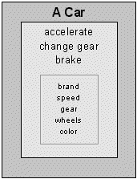
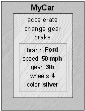
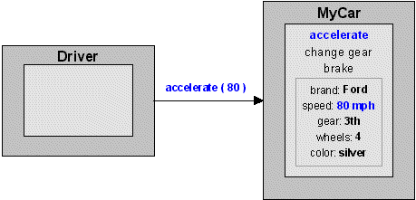
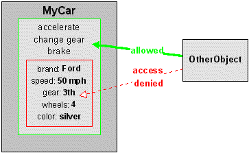
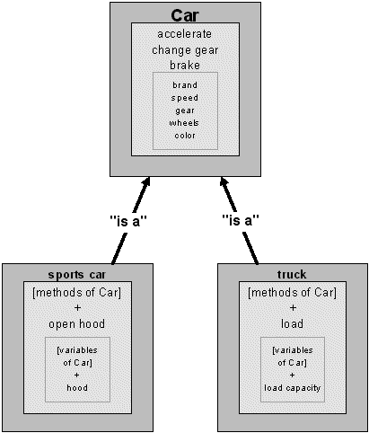
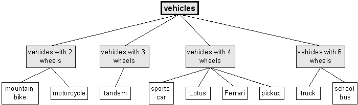
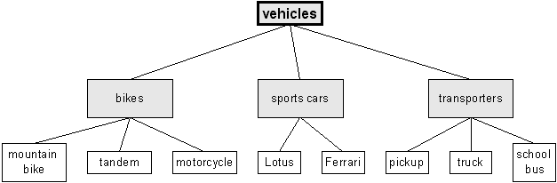
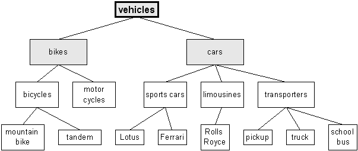
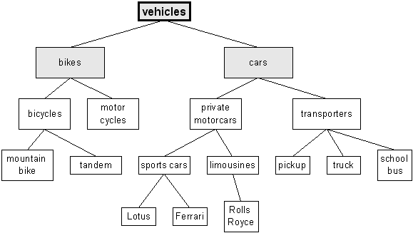

bottom of page
bottom of page
| bottom of page |
The classes and their relationships |
| jump directly to |
Object Orientation (OO) is a concept for developing reusable, easy-to-handle and high-quality software components.
Unlike conventional software development, Object Orientation goes a different way that is more related to real-world problems.
Since the first serious steps in software engineering were done in the 1950's, the nature of software changed through the years.
As BOOCH describes it:
The method is subdivided in several parts:
While traditional structured languages were using functions and procedures that operate on (global) data, object oriented languages are using classes and objects that consist of methods, which operate only on their own internal data.
In the following, the terms of Object Orientation will be described.
 top of page top of page |
CAMPIONE and WALRATH define a class in the following way:
What does that mean?
Example: Class "Car"

As can be seen, the class, representing a car, has variables (brand, speed, gear, ...) and methods (accelerate, brake, ...).
This class serves as a generic description of any existing car, because each real-world thing that is a car,
has, for example, a speed, a number of wheels, ...
And when driving a car, you can accelerate it or change the current gear.
But you don't drive a generic car with a number of wheels at a speed.
You usually drive a specific car with, for example, four wheels at 50 mph.
This specific car is an instance of the class "Car" and is then called an object.
| top of page |
BOOCH defines an object as
What does that mean?
Example: Object "MyCar"

The object looks similar to the class it had been instantiated from.
This is, because the structure didn't change.
By applying certain values to the variables, the object MyCar has now a certain state as well as an identity.
It is still a car, for it has the same behaviour as all other cars, which had been defined in the methods
of their common class Car.
Now we have created our real-world object and are driving constantly with 50 mph.
After a while, we enter the highway, because we want to move faster.
So we have to change the car's speed (change the object's state).
This can be done by applying one of an object's methods.
| top of page |
BOOCH says, a method is
The methods, defined in a class, indicate, what the instantiated objects are able to do.
An object's method is called by other objects of the system.
As CAMPIONE and WALRATH explain:
As mentioned before, we want to change our car's speed. To achieve this, the car's driver (also an object) has to call the "accelerate" method:

As the figure shows, the "accelerate" method was called with the parameter "80", which indicates
the desired speed.
By applying that method, the value of the variable "speed" had been changed.
You don't change the state of an object (its variables) directly.
The fact that variables of an object are invisible to the outside is called encapsulation.
| top of page |
Encapsulation is one of the most important characteristics of an object oriented system.
BOOCH describes encapsulation as

As the figure of the object MyCar shows, all of its variables are enclosed inside the object's methods
and may only be changed by those methods.
As it is, when you want to accelerate a real-world car, you don't have to know exactly how the car's engine works.
You just have to know that you have to step on the gas pedal and change the gear.
This leads to an easy-to-use interface, with benefits for the user, as well as for the developer:
As mentioned before, an object oriented system consists of "classes arranged in a class hierarchy".
One class at the top of this hierarchy serves as the base for other classes, which should have the same or additional properties.
This process is called inheritance.
| top of page |
BOOCH defines inheritance as
Note that Java does not support multiple inheritance by definition. Due to that fact, it will not be described here.
Inheritance offers great advantages for software development:
Example: Subclasses of the class "Car"

Although a sports car is unlike a truck, they both have something in common and thus were defined to be subclasses of a "Car".
For example, both types have "a number of wheels" and also can be "accelerated".
As can be seen, only the variables and methods specific for one type had to be added in the subclass.
The common methods (defined in Car) may be used by instantiated objects of the subclasses and must not be rewritten.
By defining further subclasses, a class hierarchy arises, where classes in the lower part are more and more specialized.
On the other hand, classes in the upper part are more generalized.
This leads us to another aspect of object orientation, which is called abstraction.
| top of page |
BOOCH describes abstraction in the following way:
As the definition says, abstractions are "relative to the perspective of the viewer", what means that it depends a lot on the problem domain for which a class structure shall be created.
The search for abstractions starts after the objects of the problem domain have been found in the analysis phase.
What follows is the most difficult and critical part of the development process, because the design of the abstraction levels
determines the quality of the whole system.
Example:
Suppose, the result of the analysis phase were the following objects:
Obviously, the objects represent different kinds of vehicles. By realizing that fact, we have found our first abstraction and will take a class "vehicles" as the base class of our hierarchy.
A first attempt in building a hierarchy may look like:

What can be said about this hierarchy is: "Don't try this at home!".
Although it contains all objects and therefore it's "correct", it is not very intelligent.
An evident violation of the abstraction principle is, for example, that a "sports car" can be found on the
same level as a "Ferrari" and a "Lotus".
This must be wrong, because they both are kinds of a "sports car".
So we change our hierarchy to the following:

Now we have got a more structured hierarchy with the subclasses "bikes", "sports cars" and "transporters".
But they are still too specific.
For instance, if a new object "Rolls Royce" is to be added to the hierarchy, where should it be inserted,
for it is no sports car?
We rearrange our structure by introducing a new class "cars":

Now there are four levels of abstraction.
The new class "cars" may contain the properties that are common to all of its subclasses.
But there is still something wrong with our sports cars and limousines.
As you can see, they are arranged on the same abstraction level as, for example, a "truck".
But a truck is a more abstract thing than a Ferrari or a Rolls Royce.
We try to improve our hierarchy by doing another abstraction:

The fifth abstraction level had been created and our class hierarchy is now much more structured than it was at our first attempt, but is still far from being finished.
This was an example of the abstractioning process that should only demonstrate, how a class hierarchy can be built up and which thoughts have to be made.
The next sections consist of my class hierarchy for neural networks.
Because neural nets are themselves abstract things, the design process was, literally, an "abstraction of abstractions"
and, unlike the previous example, took me a few more attempts to get any results.
| top of page |
The classes and their relationships |
| navigation |
|
[main page]
[content]
[neural net overview] [class structure] [using the classes] [sample applet] [glossary] [literature] [about the author] [what do you think ?] |
Last modified:
Copyright © 1996-97 Jochen Fröhlich. All rights reserved.
 Classes
Classes